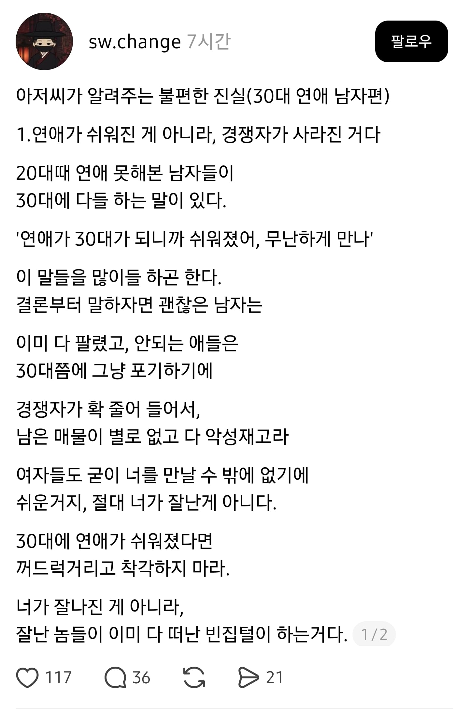

물론 예쁜 20대를 만난다면 너가 잘나진게 맞음

물론 예쁜 20대를 만난다면 너가 잘나진게 맞음
긁
와인에서 컷
긁혔네
30, 40대에도 연애 못하는 남자의 웃픈 자위네욬ㅋ
애초에 모든 여성은 상위 10% 남성을 바라보고 모든 남성은 상위 50%를 바라본다
근데 우리나라는 일부일처제다 30대에 잘풀리는 이유는 성욕이 한풀 꺾여서이다
기능은 문제가 없어도 이미 할만치 해봤거나 욕심이 줄어버린거다
나이가 이성에 대한 욕심에 위고비를 맞춰준거다
그래서 조금만 만족되어도 충분하다 느낀다
반대도 마찬가지아니냐?
모솔이었던 내 친구들 ㅋㅋㅋㅋ 30대에 연애하고 결혼함 ㅋㅋㅋㅋㅋㅋㅋㅋㅋ 그래서 그런건가
개븅신같은 소리네 30대되면 갑자기 여성비율이 늘어남?ㅋㅋㅋㅋㅋ 하여튼 영포티들
갑자기 결혼마려운 여성비율은 늘어나긴함
이런 똥글 쓰레드를 진심으로 믿는건 아니지.?
근데 솔직히 순번이 온다...
30대 후반 관리 잘된 차장분들이랑 이야기하면 좋은 사람들 소개팅 많이 받는데, (먼저다가갔을때) 그 혼자만의 시간을 많이 잃어서 선뜻 다가가기가 어렵다고 하시더라고.. 뭐 꺼드럭거린다고 그런게 아니라 점점 어려워지는거같다 좋은 사람 만나기가
늦었지만 30대에 잘나가면 그것도 자기가 잘난거 맞지
경쟁자 없어졌으면
지는 30-40넘어도 아직 연애 못했거나 잘안되는데
지랑 같이 20대때 못하던 애들이 연애 잘되고 결혼하니까
어떻게든 까내리고 싶어하는 음습한 의도로 보임
긁힌 30대 한바가지네
내 생각에는
20대때는 직장이 없거나 조금 못벌어도 연예는 가능함 >> 아무래도 경쟁자가 많음
근데 30대때는 직장이 없거나 조금 못벌면 연예는 사실상 선택지에서 사라짐
30대에 직장이 없으면 사실상 연예가 아니라 사회적으로 도태되는거고, 돈못버는 직업이면 돈버느라 또는 돈이 없어서 연예를 하지 않음
20대를 열심히 보내느라 연예를 못한 사람이 경제적으로 안정된 30대를 맞이했다면 연예 기회가 20대 때 보다많이 생길수 있음
특히 여자들도 나이가 들수록 안정성, 경제력을 많이 보거든
연애
연예인
이렇게 연애 안해본 티를 내는군요
부끄럽습니다..
30대때 20대를 만나면 20-40대남자들하고 경쟁하는거라 더 빡신거 아니야?
20대때도 안팔리던놈둘이 30대에 잘팔릴리가 꿈깨쇼
헉 ㅋㅋ
갈놈년들 다 가고 리그가 좁아지니까 쉬워진거지 ㅋㅋㅋㅋ
30대에 연애가 쉬워짐?
뭔 소리지?
이것 저것 재야 하고 결혼도 생각해야 하고
더 힘들어지지 무슨...
저거보단
돈 생기고 여유 생기니 마음가짐부터 좀 달라지는 듯 ㅋㅋ
원래 보던 여자들 20대 연애권력도 점점 낮아지는 때고 하니
글 자체가 개소리임
다같이 20대에 안 팔리다가 30대 되면서 누군가는 악성재고가 되버리고
누군가는 잘 팔리기 시작한다?
그럼 잘 팔리는 애들이 뭔가 외형적으로나 내면적으로나 혹은 물질적으로 여성들을 매료시킬 뭔가가 생겨난 거지
그냥 늙탱이가 심술 부리는 글 우월한 척 하는 글이다
남자나 여자나 마찬가지로 10대에 안 팔리다가 20대에 잘 팔리거나
20대 보다 30대가 더 나아지거나
40대에 와인이 될 수도 있는거지
찌질함 덜어내고 성숙해지는 그런 경험 해본 적이 없나